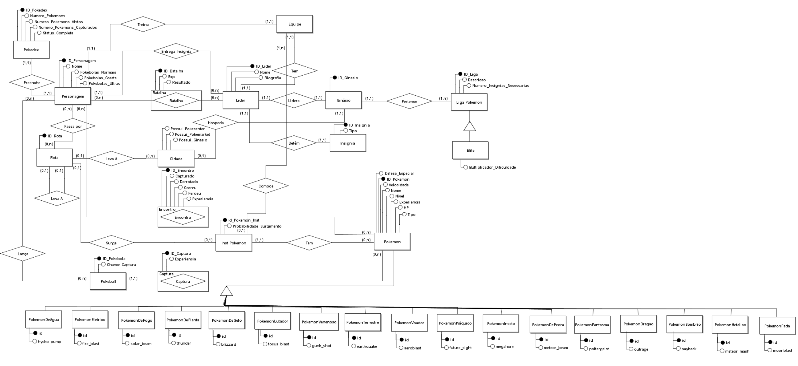

Descrição do Artefato DER - Quarta Versão
DER:

Principais Alterações
- Melhor organização do Diagrama e geral
- Adicionando especializacao/generalizacao para tipos
Exemplo de Integridade na Insercao de dados
-
Integridade dos Dados Obrigatórios (Parâmetros da Genérica):
Checagem de Nulos: A procedure verifica se todos os parâmetros obrigatórios da tabela genérica Pokemon não são nulos. Isso inclui dex, nome, tipo, hp, ataque, defesa, velocidade, spAtaque, spDefesa, evolucaoDex, habilidadeId, pokemonDex, e rotaId. Se algum desses parâmetros for nulo, a procedure não prossegue com a inserção e exibe uma mensagem de erro.
-
Integridade dos Dados Específicos (Parâmetros da Específica)
Checagem de Nulos: A procedure verifica se pelo menos um dos parâmetros específicos não é nulo antes de tentar inserir os dados nas tabelas específicas (PokemonDeAgua, PokemonDeFogo, PokemonDePlanta, etc.). Se todos os parâmetros específicos forem nulos, a procedure exibe uma mensagem de erro e não tenta realizar a inserção. Inserção na Tabela Genérica
Se todos os parâmetros obrigatórios estão presentes e válidos, a procedure insere os dados na tabela Pokemon. A chave primária (ou identificador único) gerada (dex) é retornada e armazenada na variável aux. Isso garante que a mesma chave primária seja usada para as inserções subsequentes nas tabelas específicas.
-
Inserção nas Tabelas Específicas:
A procedure insere dados nas tabelas específicas de acordo com os parâmetros fornecidos. Por exemplo, se _hydro_pump não for nulo, insere um registro na tabela PokemonDeAgua com o id retornado da tabela Pokemon e o valor de _hydro_pump.
-
Restrições de Integridade:
Cada tabela específica tem sua própria restrição de integridade, geralmente assegurando que o id é uma chave estrangeira válida que corresponde a um dex na tabela Pokemon. Isso garante que não haja registros órfãos e que todos os dados específicos estejam associados a um Pokémon existente.
-
Mensagens de Erro:
Se algum dos parâmetros obrigatórios da tabela genérica estiver faltando ou se todos os parâmetros específicos estiverem nulos, a procedure levanta uma mensagem de erro apropriada usando RAISE NOTICE. Isso ajuda na depuração e garante que o usuário saiba o que está errado.
-- DDL
DROP TABLE IF EXISTS Pokemon CASCADE;
DROP TABLE IF EXISTS PokemonDeAgua;
DROP TABLE IF EXISTS PokemonEletrico;
DROP TABLE IF EXISTS PokemonDeFogo;
DROP TABLE IF EXISTS PokemonDePlanta;
DROP TABLE IF EXISTS PokemonDeGelo;
DROP TABLE IF EXISTS PokemonLutador;
DROP TABLE IF EXISTS PokemonVenenoso;
DROP TABLE IF EXISTS PokemonTerrestre;
DROP TABLE IF EXISTS PokemonVoador;
DROP TABLE IF EXISTS PokemonPsiquico;
DROP TABLE IF EXISTS PokemonInseto;
DROP TABLE IF EXISTS PokemonDePedra;
DROP TABLE IF EXISTS PokemonFantasma;
DROP TABLE IF EXISTS PokemonDragao;
DROP TABLE IF EXISTS PokemonSombrio;
DROP TABLE IF EXISTS PokemonMetalico;
DROP TABLE IF EXISTS PokemonFada;
CREATE TABLE Pokemon (
dex SERIAL PRIMARY KEY,
nome TEXT NOT NULL,
tipo TEXT NOT NULL,
hp INTEGER NOT NULL,
ataque INTEGER NOT NULL,
defesa INTEGER NOT NULL,
velocidade INTEGER NOT NULL,
spAtaque INTEGER NOT NULL,
spDefesa INTEGER NOT NULL,
evolucaoDex INTEGER,
habilidadeId INTEGER NOT NULL,
pokemonDex INTEGER NOT NULL,
rotaId INTEGER
);
-- Tabela para Pokémon de Água
CREATE TABLE PokemonDeAgua (
id INT REFERENCES Pokemon(dex),
hydro_pump INT
);
-- Tabela para Pokémon Elétrico
CREATE TABLE PokemonEletrico (
id INT REFERENCES Pokemon(dex),
thunder INT
);
-- Tabela para Pokémon de Fogo
CREATE TABLE PokemonDeFogo (
id INT REFERENCES Pokemon(dex),
fire_blast INT
);
-- Tabela para Pokémon de Planta
CREATE TABLE PokemonDePlanta (
id INT REFERENCES Pokemon(dex),
solar_beam INT
);
-- Tabela para Pokémon de Gelo
CREATE TABLE PokemonDeGelo (
id INT REFERENCES Pokemon(dex),
blizzard INT
);
-- Tabela para Pokémon Lutador
CREATE TABLE PokemonLutador (
id INT REFERENCES Pokemon(dex),
focus_blast INT
);
-- Tabela para Pokémon Venenoso
CREATE TABLE PokemonVenenoso (
id INT REFERENCES Pokemon(dex),
gunk_shot INT
);
-- Tabela para Pokémon Terrestre
CREATE TABLE PokemonTerrestre (
id INT REFERENCES Pokemon(dex),
meteor_beam INT
);
-- Tabela para Pokémon Voador
CREATE TABLE PokemonVoador (
id INT REFERENCES Pokemon(dex),
aero_blast INT
);
-- Tabela para Pokémon Psíquico
CREATE TABLE PokemonPsiquico (
id INT REFERENCES Pokemon(dex),
future_sight INT
);
-- Tabela para Pokémon Inseto
CREATE TABLE PokemonInseto (
id INT REFERENCES Pokemon(dex),
megahorn INT
);
-- Tabela para Pokémon de Pedra
CREATE TABLE PokemonDePedra (
id INT REFERENCES Pokemon(dex),
meteor_beam INT
);
-- Tabela para Pokémon Fantasma
CREATE TABLE PokemonFantasma (
id INT REFERENCES Pokemon(dex),
poltergeist INT
);
-- Tabela para Pokémon Dragão
CREATE TABLE PokemonDragao (
id INT REFERENCES Pokemon(dex),
outrage INT
);
-- Tabela para Pokémon Sombrio
CREATE TABLE PokemonSombrio (
id INT REFERENCES Pokemon(dex),
payback INT
);
-- Tabela para Pokémon Metálico
CREATE TABLE PokemonMetalico (
id INT REFERENCES Pokemon(dex),
meteor_mash INT
);
-- Tabela para Pokémon Fada
CREATE TABLE PokemonFada (
id INT REFERENCES Pokemon(dex),
moonblast INT
);
-- Stored Procedure para inserir um Pokémon
CREATE OR REPLACE FUNCTION inserir_pokemon_com_respectivo_tipo(
_dex INT,
_nome TEXT,
_tipo TEXT,
_hp INT,
_ataque INT,
_defesa INT,
_velocidade INT,
_spAtaque INT,
_spDefesa INT,
_evolucaoDex INT,
_habilidadeId INT,
_pokemonDex INT,
_rotaId INT,
_hydro_pump INT,
_fire_blast INT,
_solar_beam INT,
_thunder INT,
_blizzard INT,
_focus_blast INT,
_gunk_shot INT,
_aero_blast INT,
_future_sight INT,
_megahorn INT,
_meteor_beam INT,
_poltergeist INT,
_outrage INT,
_payback INT,
_meteor_mash INT,
_moonblast INT)
RETURNS VOID AS $$
DECLARE
aux INT;
BEGIN
-- Parametros obrigatorios da generica
IF _dex IS NOT NULL AND _nome IS NOT NULL AND _tipo IS NOT NULL AND _hp IS NOT NULL AND
_ataque IS NOT NULL AND _defesa IS NOT NULL AND _velocidade IS NOT NULL AND
_spAtaque IS NOT NULL AND _spDefesa IS NOT NULL AND _evolucaoDex IS NOT NULL AND
_habilidadeId IS NOT NULL AND _pokemonDex IS NOT NULL AND _rotaId IS NOT NULL THEN
-- Parametros obrigatorios da especifica
IF _hydro_pump IS NOT NULL OR _fire_blast IS NOT NULL OR _solar_beam IS NOT NULL OR
_thunder IS NOT NULL OR _blizzard IS NOT NULL OR _focus_blast IS NOT NULL OR
_gunk_shot IS NOT NULL OR _aero_blast IS NOT NULL OR _future_sight IS NOT NULL OR
_megahorn IS NOT NULL OR _meteor_beam IS NOT NULL OR _poltergeist IS NOT NULL OR
_outrage IS NOT NULL OR _payback IS NOT NULL OR _meteor_mash IS NOT NULL OR
_moonblast IS NOT NULL THEN
-- Insere os dados na tabela Pokemon (generica)
INSERT INTO Pokemon (dex, nome, tipo, hp, ataque, defesa, velocidade, spAtaque, spDefesa, evolucaoDex, habilidadeId, pokemonDex, rotaId) values
(_dex, _nome, _tipo, _hp, _ataque, _defesa, _velocidade, _spAtaque, _spDefesa, _evolucaoDex, _habilidadeId, _pokemonDex, _rotaId) RETURNING dex INTO aux;
-- Insere os dados nas tabelas especificas
IF _hydro_pump IS NOT NULL THEN
INSERT INTO PokemonDeAgua (id, hydro_pump) values (aux, _hydro_pump);
END IF;
IF _fire_blast IS NOT NULL THEN
INSERT INTO PokemonDeFogo (id, fire_blast) values (aux, _fire_blast);
END IF;
IF _solar_beam IS NOT NULL THEN
INSERT INTO PokemonDePlanta (id, solar_beam) values (aux, _solar_beam);
END IF;
IF _thunder IS NOT NULL THEN
INSERT INTO PokemonEletrico (id, thunder) values (aux, _thunder);
END IF;
IF _blizzard IS NOT NULL THEN
INSERT INTO PokemonDeGelo (id, blizzard) values (aux, _blizzard);
END IF;
IF _focus_blast IS NOT NULL THEN
INSERT INTO PokemonLutador (id, focus_blast) values (aux, _focus_blast);
END IF;
IF _gunk_shot IS NOT NULL THEN
INSERT INTO PokemonVenenoso (id, gunk_shot) values (aux, _gunk_shot);
END IF;
IF _aero_blast IS NOT NULL THEN
INSERT INTO PokemonVoador (id, aero_blast) values (aux, _aero_blast);
END IF;
IF _future_sight IS NOT NULL THEN
INSERT INTO PokemonPsiquico (id, future_sight) values (aux, _future_sight);
END IF;
IF _megahorn IS NOT NULL THEN
INSERT INTO PokemonInseto (id, megahorn) values (aux, _megahorn);
END IF;
IF _meteor_beam IS NOT NULL THEN
INSERT INTO PokemonTerrestre (id, meteor_beam) values (aux, _meteor_beam);
END IF;
IF _poltergeist IS NOT NULL THEN
INSERT INTO PokemonFantasma (id, poltergeist) values (aux, _poltergeist);
END IF;
IF _outrage IS NOT NULL THEN
INSERT INTO PokemonDragao (id, outrage) values (aux, _outrage);
END IF;
IF _payback IS NOT NULL THEN
INSERT INTO PokemonNoturno (id, payback) values (aux, _payback);
END IF;
IF _meteor_mash IS NOT NULL THEN
INSERT INTO PokemonMetal (id, meteor_mash) values (aux, _meteor_mash);
END IF;
IF _moonblast IS NOT NULL THEN
INSERT INTO PokemonFada (id, moonblast) values (aux, _moonblast);
END IF;
ELSE
RAISE NOTICE 'Erro: Os parâmetros da especifica não podem ser nulos.';
END IF;
ELSE
RAISE NOTICE 'Erro: Os parâmetros da generica não podem ser nulos.';
END IF;
END;
$$ LANGUAGE plpgsql;
-- Exemplo de Uso INSERIR
SELECT inserir_pokemon_com_respectivo_tipo(
_dex := 1, -- ID do Pokémon (dex)
_nome := 'Squirtle', -- Nome do Pokémon
_tipo := 'Agua', -- Tipo do Pokémon (Agua, Fogo, Eletrico, etc.)
_hp := 44, -- Pontos de vida (HP)
_ataque := 48, -- Valor do ataque
_defesa := 65, -- Valor da defesa
_velocidade := 43, -- Velocidade
_spAtaque := 50, -- Ataque especial
_spDefesa := 64, -- Defesa especial
_evolucaoDex := 2, -- Dex do Pokémon evoluído (2 = Wartortle)
_habilidadeId := 101, -- ID da habilidade associada (número fictício)
_pokemonDex := 1, -- ID do Pokémon inicial (referência cruzada)
_rotaId := 3, -- ID da rota em que o Pokémon pode ser encontrado
_hydro_pump := 110, -- Ataque Hydro Pump (valor fictício de poder)
_fire_blast := NULL, -- Sem valor para Fire Blast
_solar_beam := NULL, -- Sem valor para Solar Beam
_thunder := NULL, -- Sem valor para Thunder
_blizzard := NULL, -- Sem valor para Blizzard
_focus_blast := NULL, -- Sem valor para Focus Blast
_gunk_shot := NULL, -- Sem valor para Gunk Shot
_aero_blast := NULL, -- Sem valor para Aero Blast
_future_sight := NULL, -- Sem valor para Future Sight
_megahorn := NULL, -- Sem valor para Megahorn
_meteor_beam := NULL, -- Sem valor para Meteor Beam
_poltergeist := NULL, -- Sem valor para Poltergeist
_outrage := NULL, -- Sem valor para Outrage
_payback := NULL, -- Sem valor para Payback
_meteor_mash := NULL, -- Sem valor para Meteor Mash
_moonblast := NULL -- Sem valor para Moonblast
);
REVOKE INSERT ON Pokemon FROM PUBLIC;
REVOKE INSERT ON PokemonDeAgua FROM PUBLIC;
REVOKE INSERT ON PokemonEletrico FROM PUBLIC;
REVOKE INSERT ON PokemonDeFogo FROM PUBLIC;
REVOKE INSERT ON PokemonDePlanta FROM PUBLIC;
REVOKE INSERT ON PokemonDeGelo FROM PUBLIC;
REVOKE INSERT ON PokemonLutador FROM PUBLIC;
REVOKE INSERT ON PokemonVenenoso FROM PUBLIC;
REVOKE INSERT ON PokemonTerrestre FROM PUBLIC;
REVOKE INSERT ON PokemonVoador FROM PUBLIC;
REVOKE INSERT ON PokemonPsiquico FROM PUBLIC;
REVOKE INSERT ON PokemonInseto FROM PUBLIC;
REVOKE INSERT ON PokemonDePedra FROM PUBLIC;
REVOKE INSERT ON PokemonFantasma FROM PUBLIC;
REVOKE INSERT ON PokemonDragao FROM PUBLIC;
REVOKE INSERT ON PokemonSombrio FROM PUBLIC;
REVOKE INSERT ON PokemonMetalico FROM PUBLIC;
REVOKE INSERT ON PokemonFada FROM PUBLIC;